Overfitting and regularisation
Introduction to Artificial Intelligence and Machine Learning 4
Jiabao.Xu@glasgow.ac.uk
massimo.vassalli@glasgow.ac.uk
From curves to an explanation
In 4b we saw overfitting: a validation curve that turns upwards for large C, a learning curve with a wide gap between training and validation. Today we explain it and learn to control it:
- why flexible models fail on new data: ill-posed problems, large weights, multicollinearity
- the bias–variance decomposition: the error on new data in three parts
- two ways to reduce variance: averaging many models, and regularisation (Ridge, Lasso, Elastic Net)
- regularisation for classification: what
Creally is - embedded feature selection, and other regularisers (early stopping)
- what regularisation cannot do
Note
CW1 is due this week: bring your questions to Lab02. From today, the tools are for CW2 (and CW3).
The map of the course
The order of weeks 6 and 7 has changed since the map shown in Lecture 3a: the methods most useful for CW2 (trees and ensembles) now come first, in week 6.
| Step of the ML process | What we do | Lectures |
|---|---|---|
| Problem understanding | frame the problem as an ML task, choose the target | 2a, all coursework |
| Data understanding | explore, visualise, find structure | 2a, 5b (PCA), 7b (clustering) |
| Data preparation | clean, impute, encode, scale, transform, select features | 2a, 3b, 4b, 5a, 5b |
| Modelling | choose and train models: the \((H, L, A)\) of each method | 2b, 3a, 5a, 6a, 6b, 7a, 7b, ANN (weeks 8–10) |
| Evaluation | metrics, validation strategies, hyperparameter tuning | 4a, 4b |
| Deployment | communicate results and their limits | coursework reports and presentation |
| Week 5 | Week 6 | Week 7 |
|---|---|---|
| 5a Overfitting and regularisation | 6a Decision trees | 7a kNN and support vector machines |
| 5b Dimensionality reduction and PCA | 6b Ensemble learning | 7b Clustering |
Note
Lectures 2a–4b refer to the previous order where they point ahead: ensembles (then 7a) are now in 6b, kNN and SVM (then 6b) in 7a. Deadlines are on Moodle.
Why flexible models fail
Following Jacques Hadamard, a problem is well-posed if
- a solution exists,
- the solution is unique,
- the solution depends continuously on the data: small changes in the data give small changes in the solution.
Learning from a finite, noisy sample is usually ill-posed. Many models fit the training data equally well (no uniqueness), and a flexible model can change completely when a few samples change (no stability). The training loss alone cannot tell which of the many solutions will work on new data: we need to add information, a preference for “simple” solutions. That added preference is regularisation.
Overfitting: a polynomial example
Twenty noisy samples from a quadratic law, fitted with polynomials of degree 1, 2 and 15 (polynomial features of 3b, then scaling and linear regression):
from sklearn.linear_model import LinearRegression
from sklearn.metrics import mean_squared_error
from sklearn.pipeline import make_pipeline
from sklearn.preprocessing import PolynomialFeatures, StandardScaler
def f_true(x): # the "true" law
return 2.0 + 0.5 * x - 1.2 * x**2
rng = np.random.default_rng(0)
x_tr = rng.uniform(-3, 3, 20) # 20 training samples
y_tr = f_true(x_tr) + rng.normal(0, 2.0, 20) # noise, sigma = 2
x_te = rng.uniform(-3, 3, 200) # 200 new samples
y_te = f_true(x_te) + rng.normal(0, 2.0, 200)
X_tr, X_te = x_tr.reshape(-1, 1), x_te.reshape(-1, 1)
def poly(deg, reg=None): # polynomial model of degree deg
return make_pipeline(PolynomialFeatures(deg, include_bias=False),
StandardScaler(), reg if reg is not None else LinearRegression())
xg = np.linspace(-3, 3, 400).reshape(-1, 1)
fig, axs = plt.subplots(1, 3, figsize=(7, 2.6), sharey=True)
for ax, deg in zip(axs, [1, 2, 15]):
ax.scatter(x_tr, y_tr, s=12)
ax.plot(xg, poly(deg).fit(X_tr, y_tr).predict(xg), "C1")
ax.set_title(f"degree {deg}")
ax.set_ylim(-15, 6)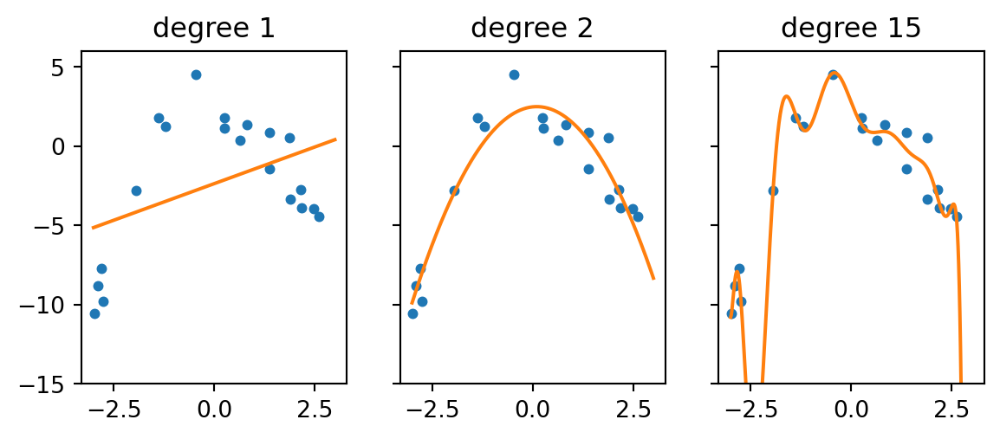
On new data
degree 1: train MSE = 14.38 test MSE = 17.1 largest |w_j| = 1.8
degree 2: train MSE = 1.74 test MSE = 4.5 largest |w_j| = 3.8
degree 15: train MSE = 0.58 test MSE = 705.1 largest |w_j| = 5397.2Degree 15 has the lowest training error and a test error thousands of times larger: it has learned the noise of these twenty samples. The noise variance is \(\sigma^2 = 4\), so no model can do better than a test MSE of about 4 on average; degree 2 gets close. The last column is the symptom to remember: the overfitted model needs huge weights, of alternating sign, that cancel each other on the training points and explode between them. Large weights mean that a small change in \(\mathbf{x}\) (or in the data) produces a large change in \(\hat y\): exactly the instability of an ill-posed problem.
Multicollinearity
In 2b, s1 and s2 of the diabetes data (\(r \approx 0.9\)) got large weights of opposite sign. How stable are they? Refit the linear model on 200 bootstrap samples (4a) of the training set:
from sklearn.datasets import load_diabetes
from sklearn.model_selection import train_test_split
diabetes = load_diabetes()
Xd, yd = diabetes.data, diabetes.target
names = np.array(diabetes.feature_names)
Xd_train, Xd_test, yd_train, yd_test = train_test_split(
Xd, yd, test_size=0.25, random_state=0)
rng = np.random.default_rng(0)
W = []
for b in range(200):
i = rng.integers(0, len(yd_train), len(yd_train))
W.append(LinearRegression().fit(Xd_train[i], yd_train[i]).coef_)
W = np.array(W)
fig, ax = plt.subplots(figsize=(5.5, 3))
ax.boxplot(W)
ax.set_xticks(range(1, 11), names)
ax.axhline(0, color="k", linewidth=0.8)
_ = ax.set_ylabel("weight $w_j$ (200 refits)")
print("corr(w_s1, w_s2) =", np.corrcoef(W[:, 4], W[:, 5])[0, 1].round(2))corr(w_s1, w_s2) = -0.97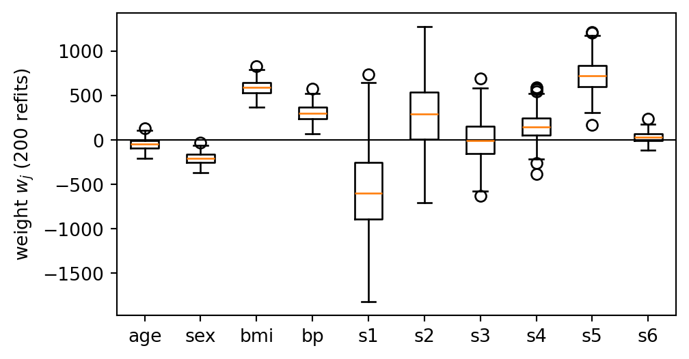
The weights of s1 and s2 swing over hundreds of units from one sample to the next, and always in opposite directions (correlation close to \(-1\)): the data constrain \(w_{s1} + w_{s2}\) well, but not the two separately. Their predictions are fine; their weights cannot be interpreted. This is data multicollinearity; PolynomialFeatures creates structural multicollinearity (\(x\), \(x^2\), \(x^3\) are strongly correlated), which is why degree 15 needed huge weights.
The bias–variance decomposition
Imagine repeating the whole experiment many times: new training set \(\mathcal{D}\), new fit \(\hat f\). Twenty repetitions of three of our polynomial models, with \(f\) in black and the average fit dashed:
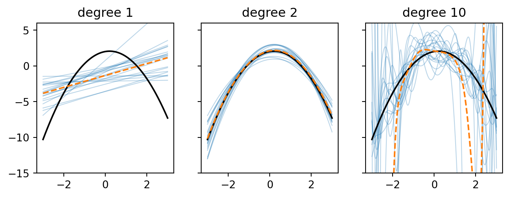
Degree 1: the fits agree with each other, but their average is far from \(f\) (bias). Degree 10: on average close to \(f\), but each fit is very different from the others (variance). Degree 2: both small.
The expected error over training sets
The previous slide shows one experiment repeated twenty times. Our training set is just one of those draws: we cannot know whether it was a lucky or an unlucky one (the 200 splits of 4b). The fair way to judge a learning method is therefore its error on average over all the training sets it could have received.
The expectation \(\mathbb{E}[\cdot]\) is that average: the mean of a random quantity over all its possible values, weighted by their probability. Here two things are random: the training set \(\mathcal{D}\) (so the fitted model \(\hat f\), which depends on it) and the noise \(\varepsilon\) of the new sample, \(y = f(\mathbf{x}) + \varepsilon\), with \(\mathbb{E}[\varepsilon] = 0\) and \(\mathbb{E}[\varepsilon^2] = \sigma^2\). In the simulations, \(\mathbb{E}\) is approximated by averaging over many repetitions. Two properties are all we need: \(\mathbb{E}\) is linear, and a quantity that does not depend on \(\mathcal{D}\) or \(\varepsilon\) (like \(f(\mathbf{x})\)) is a constant.
At a fixed point \(\mathbf{x}\), call \(\bar f = \mathbb{E}[\hat f]\) the average model. Add and subtract \(f\) and \(\bar f\):
\[ y - \hat f = \underbrace{(f - \bar f)}_{\text{constant}} + \underbrace{(\bar f - \hat f)}_{\text{depends on }\mathcal{D}} + \underbrace{\varepsilon}_{\text{noise}} \]
Squaring gives three squares and three cross terms. Taking \(\mathbb{E}\), the cross terms vanish:
- \(\mathbb{E}\big[2(f - \bar f)(\bar f - \hat f)\big] = 2(f - \bar f)\big(\bar f - \mathbb{E}[\hat f]\big) = 0\), by the definition of \(\bar f\)
- \(\mathbb{E}\big[2(f - \bar f)\,\varepsilon\big] = 2(f - \bar f)\,\mathbb{E}[\varepsilon] = 0\)
- \(\mathbb{E}\big[2(\bar f - \hat f)\,\varepsilon\big] = 2\,\mathbb{E}[\bar f - \hat f]\,\mathbb{E}[\varepsilon] = 0\), because the noise of the new sample is independent of the training set
Three sources of error
What survives are the expectations of the three squares:
\[ \mathbb{E}\big[(y-\hat f(\mathbf{x}))^2\big] = \underbrace{\big(\bar f(\mathbf{x}) - f(\mathbf{x})\big)^2}_{\text{bias}^2} + \underbrace{\mathbb{E}\Big[\big(\hat f(\mathbf{x}) - \bar f(\mathbf{x})\big)^2\Big]}_{\text{variance}} + \underbrace{\sigma^2}_{\text{noise}} \]
- bias\(^2\): how far the average model is from the truth; a property of the model family \(H\) (a line cannot follow a parabola, whatever the data). Degree 1 on the previous slide.
- variance: how much \(\hat f\) changes from one training set to another; large for flexible models and small \(n\). Degree 10 on the previous slide.
- noise: the irreducible error; no model can remove it. Here \(\sigma^2 = 4\): the floor of the test MSE of the polynomial example.
The decomposition is exact for the squared error, at every \(\mathbf{x}\); averaging over \(\mathbf{x}\) gives the expected test MSE. For other losses (log-loss, accuracy) the same intuition holds, with different formulas. Note what it says about evaluation: the test error of one fitted model mixes all three terms with the luck of the draw.
Measuring bias and variance
We can estimate the terms by simulation when we know \(f\): 200 training sets of 25 samples from \(f(x) = \sin(2\pi x)\) with noise \(\sigma = 0.3\), polynomials of increasing degree.
def f_sin(x):
return np.sin(2 * np.pi * x)
xq = np.linspace(0.05, 0.95, 50).reshape(-1, 1) # query points
rng = np.random.default_rng(1)
degrees = range(1, 9)
bias2, var = [], []
for deg in degrees:
P = []
for r in range(200): # 200 training sets
x = rng.uniform(0, 1, 25).reshape(-1, 1)
y = f_sin(x.ravel()) + rng.normal(0, 0.3, 25)
P.append(poly(deg).fit(x, y).predict(xq))
P = np.array(P)
bias2.append(np.mean((P.mean(axis=0) - f_sin(xq.ravel()))**2))
var.append(np.mean(P.var(axis=0)))
fig, ax = plt.subplots(figsize=(5, 3.3))
ax.semilogy(degrees, bias2, "o-", label="bias$^2$")
ax.semilogy(degrees, var, "o-", label="variance")
ax.semilogy(degrees, np.add(bias2, var) + 0.09, "k--", label="total (+ noise)")
ax.set_xlabel("polynomial degree")
_ = ax.legend()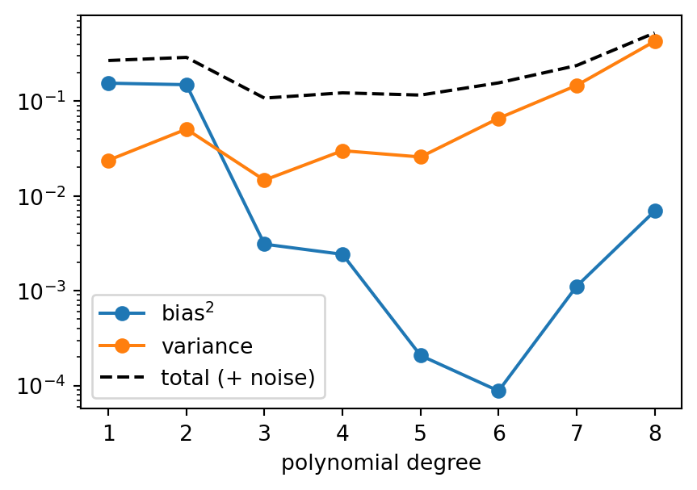
The trade-off
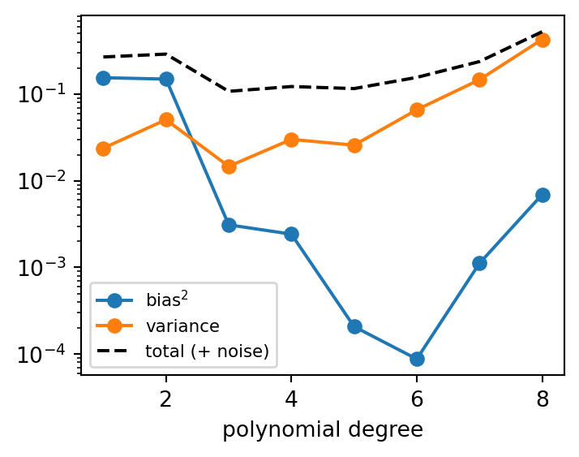
Bias falls quickly with the degree (a cubic can already follow one period of a sine). Variance grows, slowly at first and then explosively (note the log scale): with 25 samples and degree 8, nine coefficients are estimated from very little information, and beyond that the fits become unstable. The total error is smallest at an intermediate degree, here around 3 to 5.
| Regime | Bias | Variance | In the curves of 4b |
|---|---|---|---|
| too simple (underfitting) | high | low | training and validation scores both poor and close |
| about right | low | low | validation score at its best |
| too flexible (overfitting) | low | high | training score high, wide gap to validation |
We never know \(f\), so in practice bias and variance are not measured: they are read from validation and learning curves (4b). The decomposition explains the remedies. More data reduces variance; a more flexible model reduces bias. And there are two ways to reduce variance without collecting data: averaging and regularisation.
Reducing variance (1): averaging
Take \(M\) estimates \(\hat f_1, \dots, \hat f_M\) of the same quantity, each with variance \(\sigma^2\), and average them: \(\bar f = \frac{1}{M}\sum_{m=1}^{M} \hat f_m\).
Two rules of variances do all the work: a constant factor comes out squared, \(\mathrm{Var}[aX] = a^2\,\mathrm{Var}[X]\), and the variance of a sum is the sum of all variances and covariances:
\[ \mathrm{Var}[\bar f] = \mathrm{Var}\Big[\frac{1}{M}\sum_{m=1}^{M}\hat f_m\Big] = \frac{1}{M^2}\,\mathrm{Var}\Big[\sum_{m=1}^{M}\hat f_m\Big] = \frac{1}{M^2}\Big(\sum_{m=1}^{M}\mathrm{Var}[\hat f_m] + \sum_{m \neq m'}\mathrm{Cov}[\hat f_m, \hat f_{m'}]\Big) \]
If the estimates are independent, all the covariances are zero, and the \(M\) variances add up:
\[ \mathrm{Var}[\bar f] = \frac{1}{M^2}\, M\sigma^2 = \frac{\sigma^2}{M} \]
while the mean, and so the bias, does not change: \(\mathbb{E}[\bar f] = \mathbb{E}[\hat f_m]\). This is why we average repeated measurements in the lab: ten readings give a mean with \(\sqrt{10} \approx 3\) times less scatter.
Averaging correlated estimates
Estimates obtained from the same data are correlated. With pairwise correlation \(\rho\), \(\mathrm{Cov}[\hat f_m, \hat f_{m'}] = \rho\sigma^2\), and the \(M(M-1)\) covariance terms of the previous slide (all pairs \(m \neq m'\)) no longer vanish:
\[ \mathrm{Var}[\bar f] = \frac{1}{M^2}\Big(M\sigma^2 + M(M-1)\rho\sigma^2\Big) = \sigma^2\Big(\rho + \frac{1-\rho}{M}\Big) \]
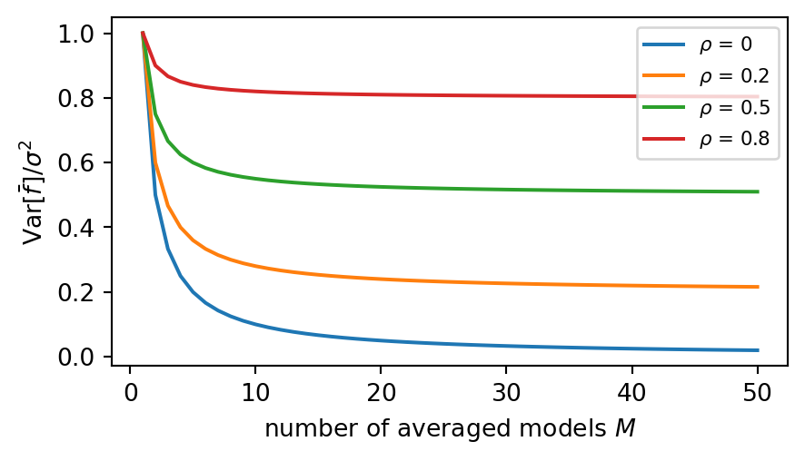
As \(M \to \infty\) the variance does not go to zero but to \(\rho\sigma^2\): averaging helps only as far as the models are diverse. This formula is the design principle of the ensembles of 6b.
Averaging models: a simulation
Polynomials of degree 5, predicting at \(x = 0\). Each model is trained on a bootstrap sample (4a) of a training set of 30 samples, and \(M\) models are averaged. The only difference: in (a) every model gets its own independent training set, in (b) all \(M\) models resample the same training set.
xs = np.array([[0.0]])
rng = np.random.default_rng(2)
def new_set(n=30): # a fresh training set
x = rng.uniform(-3, 3, n)
return x.reshape(-1, 1), f_true(x) + rng.normal(0, 2.0, n)
def boot_fit(X, y): # one model on a bootstrap sample
i = rng.integers(0, len(y), len(y))
return poly(5).fit(X[i], y[i]).predict(xs)[0]
for M in [1, 3, 10, 30]:
indep, same = [], []
for r in range(200): # 200 repetitions of the experiment
indep.append(np.mean([boot_fit(*new_set()) for _ in range(M)]))
X0, y0 = new_set()
same.append(np.mean([boot_fit(X0, y0) for _ in range(M)]))
print(f"M = {M:2d}: variance (a) independent sets = {np.var(indep):4.2f}"
f" (b) one set = {np.var(same):4.2f}")M = 1: variance (a) independent sets = 1.27 (b) one set = 1.17
M = 3: variance (a) independent sets = 0.40 (b) one set = 0.79
M = 10: variance (a) independent sets = 0.11 (b) one set = 0.70
M = 30: variance (a) independent sets = 0.04 (b) one set = 0.59For \(M = 1\) the two procedures are the same, and so are the variances (up to simulation noise). Then they part: with independent sets the variance falls as \(1/M\), to about 0.04 for thirty models. Resampling one set gives correlated models: the variance falls more slowly and levels off at about 0.6, roughly half of \(\sigma^2\), which means \(\rho \approx 0.5\) in the formula. The part of the variance that comes from having drawn this training set is shared by all the models and cannot be averaged away. In practice we have only one data set, so the art of ensembles (6b) is to make the models as uncorrelated as possible.
Reducing variance (2): regularisation
The large weights of the overfitted polynomial suggest a direct remedy: penalise them. The strategy \(L\) becomes the training loss plus a penalty on the size of \(\mathbf{w}\), weighted by \(\lambda \ge 0\):
\[ \min_{\mathbf{w}, b}\; \sum_{i=1}^{n}\big(y_i - b - \mathbf{w}^T\mathbf{x}_i\big)^2 + \lambda\, \|\mathbf{w}\|_p^p \quad\Longleftrightarrow\quad \min_{\mathbf{w}, b}\; \sum_{i=1}^{n}\big(y_i - b - \mathbf{w}^T\mathbf{x}_i\big)^2 \;\text{ subject to }\; \|\mathbf{w}\|_p^p \le \tau \]
- the two forms are equivalent: each \(\lambda\) corresponds to a budget \(\tau\) for the weights (large \(\lambda\), small \(\tau\)). The correspondence is monotone but depends on the data: \(\tau\) is the size \(\|\hat{\mathbf{w}}\|_p^p\) of the solution found with that \(\lambda\)
- \(\lambda = 0\) gives back ordinary least squares (OLS), the unpenalised fit of 2b (normal equations or gradient descent); \(\lambda \to \infty\) forces \(\mathbf{w} \to 0\), a constant model \(\hat y = b\)
- the intercept \(b\) is not penalised: shifting \(y\) should not change the model
- \(\lambda\) is a hyperparameter, chosen by cross-validation (4b)
The idea comes from inverse problems: Tikhonov (1943) stabilised the solution of \(\mathbf{A}\mathbf{f} = \mathbf{g}\) by adding \(\gamma\|\mathbf{f}\|^2\) to \(\|\mathbf{A}\mathbf{f} - \mathbf{g}\|^2\). In statistics, regularisation is the general name for methods that trade a little bias for a large reduction in variance.
Ridge regression (L2)
Ridge regression is linear regression with an L2 penalty: same model \(H\), and a strategy \(L\) that adds the squared Euclidean norm of the weights, \(\|\mathbf{w}\|_2^2 = \sum_{j=1}^{d} w_j^2\) (the intercept excluded):
\[ L_{\text{Ridge}}(\mathbf{w}, b) = \sum_{i=1}^{n}\big(y_i - b - \mathbf{w}^T\mathbf{x}_i\big)^2 + \lambda \sum_{j=1}^{d} w_j^2 \]
The loss is still quadratic, so there is a closed form. With centred data (\(\mathbf{X}_c\), \(\mathbf{y}_c\), which removes \(b\)):
\[ \hat{\mathbf{w}} = \big(\mathbf{X}_c^T\mathbf{X}_c + \lambda\mathbf{I}\big)^{-1}\mathbf{X}_c^T\mathbf{y}_c \]
Compare it with the normal equations of 2b, \(\hat{\mathbf{w}} = (\mathbf{X}_c^T\mathbf{X}_c)^{-1}\mathbf{X}_c^T\mathbf{y}_c\): Ridge adds \(\lambda\) to the diagonal. When features are strongly correlated, \(\mathbf{X}_c^T\mathbf{X}_c\) is almost singular and its inverse amplifies the noise. Adding \(\lambda\mathbf{I}\) keeps it safely invertible.
Note
In scikit-learn, Ridge(alpha=...) minimises exactly \(L_{\text{Ridge}}\): alpha is our \(\lambda\). Gradient descent also works: the penalty adds \(2\lambda w_j\) to each component of the gradient, shrinking the weights at every step (weight decay, the name used for neural networks in CW3).
Ridge repairs an ill-conditioned problem
\(\mathbf{X}_c^T\mathbf{X}_c\) is the \(d \times d\) matrix of the sums of products of the centred features: \((n-1)\) times their covariance matrix (5b). Its eigenvalues measure how much the data spread along each direction of feature space; a near-zero eigenvalue means a combination of features that hardly varies, i.e. collinear features. The condition number of this symmetric matrix is the ratio of its largest to its smallest eigenvalue, \[ \kappa = \frac{\lambda_{\max}}{\lambda_{\min}} \ge 1, \] and bounds how much a relative error in the data (noise, rounding) can be amplified in the solution \(\hat{\mathbf{w}}\). Computers store about 16 significant digits: with \(\kappa \approx 10^{16}\), none of the digits of \(\hat{\mathbf{w}}\) can be trusted. Adding \(\lambda\mathbf{I}\) shifts every eigenvalue by \(\lambda\), so \(\kappa\) becomes \((\lambda_{\max} + \lambda)/(\lambda_{\min} + \lambda)\). Diabetes with degree-2 polynomial features (65 features, 331 training samples):
from sklearn.linear_model import Ridge
prep = make_pipeline(PolynomialFeatures(2, include_bias=False), StandardScaler())
Z = prep.fit_transform(Xd_train)
Zc, yc = Z - Z.mean(axis=0), yd_train - yd_train.mean()
A = Zc.T @ Zc # d x d, here 65 x 65
ev = np.linalg.eigvalsh(A)
print(f"eigenvalues of Xc^T Xc: largest {ev.max():.1e}, smallest {abs(ev).min():.1e}")
print(f"condition number of Xc^T Xc : {np.linalg.cond(A):.1e}")
for lam in [1, 10, 100]:
print(f"condition number with lambda = {lam:3d} : {np.linalg.cond(A + lam * np.eye(len(A))):.1e}")
w = np.linalg.solve(A + 10 * np.eye(len(A)), Zc.T @ yc) # closed form, lambda = 10
print("largest difference from Ridge(alpha=10):", np.abs(w - Ridge(alpha=10).fit(Z, yd_train).coef_).max())eigenvalues of Xc^T Xc: largest 3.8e+03, smallest 1.8e-13
condition number of Xc^T Xc : 3.7e+16
condition number with lambda = 1 : 3.8e+03
condition number with lambda = 10 : 3.8e+02
condition number with lambda = 100 : 3.9e+01
largest difference from Ridge(alpha=10): 6.572520305780927e-14Without regularisation the matrix is numerically singular (sex takes only two values, so its square is a constant column, and many products are almost collinear): OLS is at the mercy of rounding errors. A modest \(\lambda\) brings the condition number to a few hundred. The closed form and Ridge agree to machine precision.
Ridge on the polynomial example
The degree-15 polynomial again, now with a Ridge penalty of increasing strength:
fig, ax = plt.subplots(figsize=(4.5, 3))
ax.scatter(x_tr, y_tr, s=12, color="k")
for lam in [1e-6, 1e-3, 1e-1, 10]:
m = poly(15, Ridge(alpha=lam)).fit(X_tr, y_tr)
test = mean_squared_error(y_te, m.predict(X_te))
ax.plot(xg, m.predict(xg),
label=fr"$\lambda$ = {lam:g}: test MSE {test:.1f}, max $|w_j|$ {np.abs(m[-1].coef_).max():.1f}")
ax.set_ylim(-15, 6)
_ = ax.legend(fontsize=7, loc="upper left", bbox_to_anchor=(1.01, 1.0))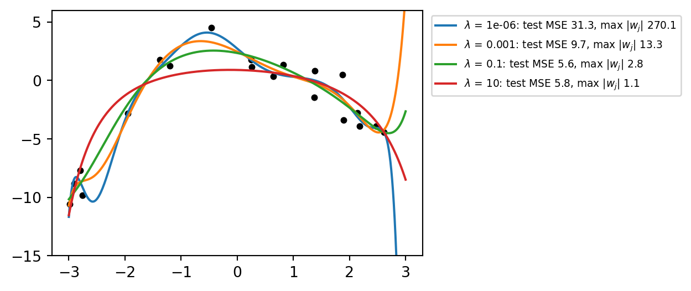
The model is still a polynomial of degree 15, but the penalty keeps the weights small and the curve smooth. Test error falls from tens to about 5, close to the degree-2 model. Too much penalty (\(\lambda = 10\)) starts to flatten the parabola: bias comes back. \(\lambda\) moves the model along the bias–variance trade-off, continuously, without changing the features.
Ridge coefficient path
The weights of the ten (standardised) diabetes features as \(\lambda\) grows:
scaler = StandardScaler().fit(Xd_train)
Zs = scaler.transform(Xd_train)
lams = np.logspace(-2, 5, 60)
coefs = np.array([Ridge(alpha=lam).fit(Zs, yd_train).coef_ for lam in lams])
fig, ax = plt.subplots(figsize=(5, 3.3))
for j, name in enumerate(names):
ax.semilogx(lams, coefs[:, j], linewidth=2.5 if name in ("s1", "s2") else 0.8,
label=name if name in ("s1", "s2", "bmi", "s5") else None)
ax.axhline(0, color="k", linewidth=0.6)
ax.set_xlabel(r"$\lambda$")
ax.set_ylabel("weight $w_j$")
_ = ax.legend(fontsize=8)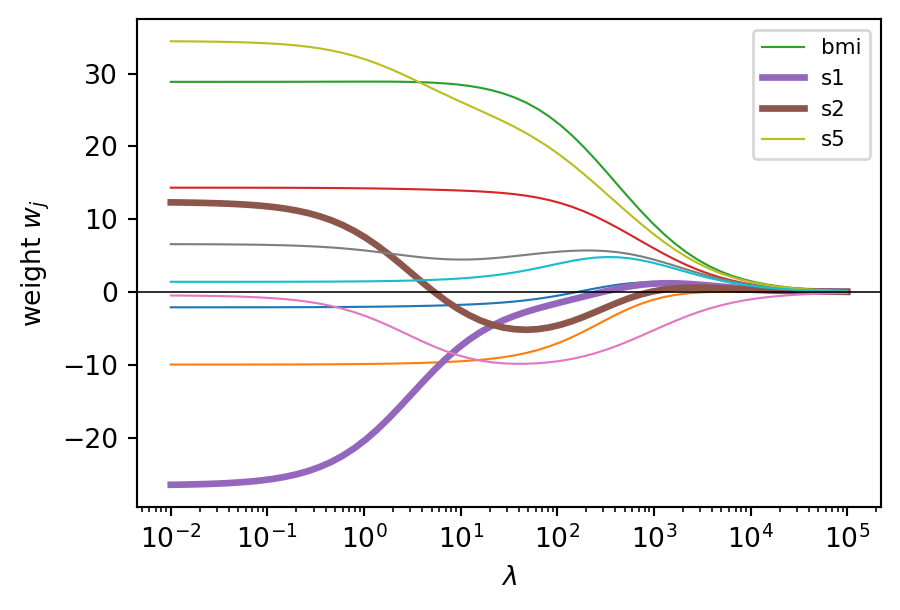
On the left, the OLS weights: s1 and s2 large and of opposite sign. As \(\lambda\) grows, their opposition collapses first: Ridge prefers to share the weight between correlated features, because \(w_1^2 + w_2^2\) is smallest when \(w_1 = w_2\). The informative features (bmi, s5) shrink last. All weights go to zero smoothly, but none becomes exactly zero.
Lasso regression (L1)
The least absolute shrinkage and selection operator penalises the absolute values, \(\|\mathbf{w}\|_1 = \sum_{j=1}^{d}|w_j|\). In scikit-learn’s convention:
\[ L_{\text{Lasso}}(\mathbf{w}, b) = \frac{1}{2n}\sum_{i=1}^{n}\big(y_i - b - \mathbf{w}^T\mathbf{x}_i\big)^2 + \lambda\sum_{j=1}^{d}|w_j| \]
- the change looks small, but the effect is qualitatively different: Lasso sets some weights exactly to zero, so it selects features while it fits
- \(|w_j|\) has no derivative at 0: there is no closed form and plain gradient descent does not apply; scikit-learn uses coordinate descent (one weight at a time)
- the loss is still convex (2b): the solution is the global minimum
Warning
Ridge and Lasso both call the penalty alpha, but the data term of Lasso is divided by \(2n\) and that of Ridge is not: the same value of alpha means very different strengths. Never copy a value from one to the other; choose each by cross-validation.
Why zeros? The geometric view
Two weights, the constrained form. The orange curves are level curves of the data term in the \((w_1, w_2)\) plane: all the weights on one curve give the same training error. For a squared loss they are ellipses centred on the OLS solution (+), tilted and stretched when the features are correlated (the shape is set by \(\mathbf{X}_c^T\mathbf{X}_c\)). The solution is the point of the region \(\|\mathbf{w}\|_p^p \le \tau\) (shaded) on the lowest level curve: where the growing ellipses first touch it.
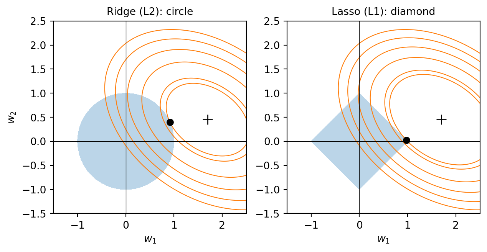
The L2 region is round: the contact point is generally away from the axes, both weights shrink but stay non-zero. The L1 region has corners on the axes, where one weight is exactly zero. The ellipses touch a corner when the OLS solution lies in the “shadow” of that corner: here \(\hat w_2\) is small compared with \(\hat w_1\), so \(w_2\) is the one set to zero. As the budget \(\tau\) shrinks (larger \(\lambda\)), more and more solutions end on corners and edges: in \(d\) dimensions, many weights become zero.
Which weights go first? Those whose feature adds little given the others: a weak feature, but also a strong one that is redundant with another (one of the twins s1, s2). Lasso’s zeros say “not needed in this model”, not “unrelated to the target”.
Why zeros? The numerical view
For standardised, uncorrelated features the two penalties have simple solutions in terms of the OLS weight \(\hat w_j\) (up to a constant factor in \(\lambda\)):
\[ w_j^{\text{Ridge}} = \frac{\hat w_j}{1 + \lambda} \qquad\qquad w_j^{\text{Lasso}} = \mathrm{sign}(\hat w_j)\,\max\big(|\hat w_j| - \lambda,\; 0\big) \]
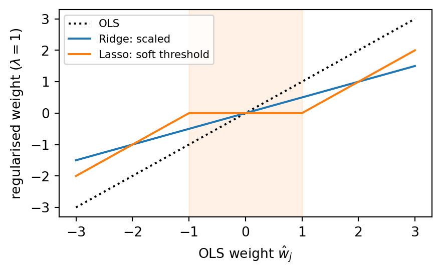
Ridge scales every weight by the same factor: small weights stay small but non-zero. Lasso subtracts \(\lambda\) and sets to zero every weight whose magnitude is below \(\lambda\) (the shaded band): a soft threshold. Coordinate descent applies this rule to one weight at a time, with the others fixed, and cycles until nothing changes.
Optimality at a kink: the KKT conditions
For a smooth convex loss, the minimum is where the gradient is zero (2b). The Lasso loss has a kink at \(w_j = 0\): there, \(|w_j|\) has no derivative, but any slope between \(-1\) and \(+1\) “supports” it from below (a subgradient). The Karush–Kuhn–Tucker (KKT) conditions generalise “gradient = 0” to problems with kinks or constraints. For Lasso, with \(g_j = \partial L_{\text{data}} / \partial w_j\) the gradient of the data term at the solution:
\[ w_j \neq 0:\quad g_j = -\lambda\,\mathrm{sign}(w_j) \qquad\qquad w_j = 0:\quad |g_j| \le \lambda \]
A non-zero weight sits where the pull of the data exactly balances the pull of the penalty. A weight stays at zero when the data pull is weaker than \(\lambda\). With the \(\frac{1}{2n}\) scaling, \(g_j = -\frac{1}{n}\sum_i x_{ij} r_i\): the correlation of feature \(j\) with the current residuals \(r_i = y_i - \hat y_i\). A feature enters the model only when it explains enough of what the others leave unexplained.
from sklearn.linear_model import Lasso
lasso = Lasso(alpha=1.0).fit(Zs, yd_train) # lambda = 1, standardised diabetes
r = yd_train - lasso.predict(Zs) # residuals
g = -(Zs * r[:, None]).mean(axis=0) # gradient of the data term
for name, wj, gj in zip(names, lasso.coef_ + 0.0, g): # + 0.0 turns -0.0 into 0.0
print(f"{name:4s} w = {wj:6.1f} |g| = {abs(gj):5.2f}" + (" <- zero" if wj == 0 else ""))age w = -0.4 |g| = 1.00
sex w = -8.0 |g| = 1.00
bmi w = 28.9 |g| = 1.00
bp w = 12.7 |g| = 1.00
s1 w = -6.8 |g| = 1.00
s2 w = 0.0 |g| = 0.89 <- zero
s3 w = -10.2 |g| = 1.00
s4 w = 0.0 |g| = 0.77 <- zero
s5 w = 27.4 |g| = 1.00
s6 w = 0.5 |g| = 1.00Every non-zero weight has \(|g_j| = 1 = \lambda\) (to solver tolerance); the zero weights have \(|g_j| < 1\). The same conditions return in 7a, where they decide which samples become support vectors: in Lasso they gate features, in SVMs samples.
Lasso path
from sklearn.linear_model import lasso_path
lams_l, coefs_l, _ = lasso_path(Zs, yd_train, alphas=np.logspace(-2, 1.7, 80))
entry = [] # order in which features enter
for k in range(len(lams_l)): # from large to small lambda
for j in np.flatnonzero(coefs_l[:, k]):
if j not in entry:
entry.append(j)
print("order of entry:", ", ".join(names[entry]))
fig, ax = plt.subplots(figsize=(5, 3.3))
for j, name in enumerate(names):
ax.semilogx(lams_l, coefs_l[j], label=name if name in ("bmi", "s5", "bp") else None)
ax.axhline(0, color="k", linewidth=0.6)
ax.set_xlabel(r"$\lambda$")
ax.set_ylabel("weight $w_j$")
_ = ax.legend(fontsize=8)order of entry: bmi, s5, bp, s3, sex, s2, s1, s6, age, s4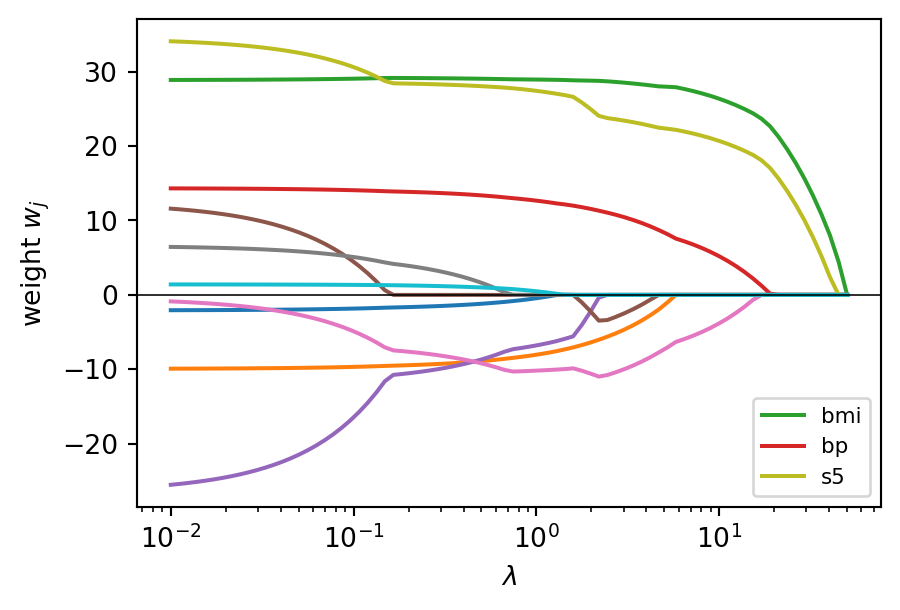
Read from right to left: at large \(\lambda\) all weights are zero; as \(\lambda\) decreases, features enter the model one by one, bmi first, then s5 and bp, the three we identified in 2b. The path is piecewise linear, with a kink each time a feature enters. Choosing \(\lambda\) chooses how many features the model uses.
Elastic Net
Elastic Net combines the two penalties; l1_ratio \(= r \in [0, 1]\) sets the mix:
\[ L_{\text{EN}}(\mathbf{w}, b) = \frac{1}{2n}\sum_{i=1}^{n}\big(y_i - b - \mathbf{w}^T\mathbf{x}_i\big)^2 + \lambda r\, \|\mathbf{w}\|_1 + \frac{\lambda(1-r)}{2}\,\|\mathbf{w}\|_2^2 \]
Two nearly identical features (x1, x2, correlation 0.995), both relevant, and eight irrelevant ones:
from sklearn.linear_model import ElasticNet
rng = np.random.default_rng(0)
x1 = rng.normal(size=200)
x2 = x1 + rng.normal(0, 0.1, 200) # a near-copy of x1
noise = rng.normal(size=(200, 8)) # 8 irrelevant features
yt = x1 + x2 + rng.normal(0, 0.5, 200)
Xt = np.c_[x1, x2, noise]
for name, est in [("OLS ", LinearRegression()), ("Ridge ", Ridge(alpha=100)),
("Lasso ", Lasso(alpha=0.5)), ("Elastic Net", ElasticNet(alpha=0.5, l1_ratio=0.5))]:
w = est.fit(Xt, yt).coef_
print(f"{name} twins: {w[0]:5.2f} {w[1]:5.2f} irrelevant: {np.sum(w[2:] != 0)} non-zero,"
f" largest |w| = {np.abs(w[2:]).max():.3f}")OLS twins: 1.17 0.82 irrelevant: 8 non-zero, largest |w| = 0.070
Ridge twins: 0.78 0.78 irrelevant: 8 non-zero, largest |w| = 0.039
Lasso twins: 0.98 0.47 irrelevant: 0 non-zero, largest |w| = 0.000
Elastic Net twins: 0.76 0.75 irrelevant: 0 non-zero, largest |w| = 0.000On the twins, Ridge and Elastic Net behave alike: they share the weight evenly. Lasso splits it unevenly and arbitrarily (with another sample it could favour the other twin, or drop one). On the irrelevant features, Elastic Net behaves like Lasso: all eight weights are exactly zero, while Ridge keeps them all, small but non-zero. Elastic Net takes the grouping of Ridge and the selection of Lasso. With groups of correlated features (genes, spectral channels, sensors), it is the safer choice.
Which penalty?
| Ridge (L2) | Lasso (L1) | Elastic Net | |
|---|---|---|---|
| effect on weights | shrinks all, none to zero | shrinks, many exactly zero | both |
| correlated features | shares the weight | picks one, arbitrarily | shares, and selects groups |
| solution | closed form, always unique | coordinate descent | coordinate descent |
| use it when | many small effects, collinear features | few relevant features, interpretation | many correlated features, \(d > n\) |
| scikit-learn | Ridge, RidgeCV |
Lasso, LassoCV |
ElasticNet, ElasticNetCV |
Tip
Some regularisation is almost always better than none: plain LinearRegression is rarely the best choice for prediction. Ridge is a good default; try Lasso or Elastic Net when you expect only a few features to matter.
Warning
Scale the features first, inside the pipeline. The penalty treats all weights alike, but the size of a weight depends on the units of its feature: a feature in millimetres needs a weight 1000 times smaller than the same feature in metres, and would be penalised 1000 times less (or \(10^6\) times less with L2).
Choosing \(\lambda\)
\(\lambda\) is a hyperparameter: chosen by cross-validation on the training set, exactly as C in 4b. RidgeCV and LassoCV do the search internally. Back to the degree-2 diabetes model that overfitted in the learning curves of 4b:
from sklearn.linear_model import LassoCV, RidgeCV
from sklearn.model_selection import KFold, cross_val_score
cv5 = KFold(5, shuffle=True, random_state=0) # regression: 5 shuffled folds
lam_grid = np.logspace(-2, 4, 25)
models = {
"linear, 10 features": make_pipeline(StandardScaler(), LinearRegression()),
"degree 2, OLS ": make_pipeline(PolynomialFeatures(2, include_bias=False),
StandardScaler(), LinearRegression()),
"degree 2, Ridge ": make_pipeline(PolynomialFeatures(2, include_bias=False), StandardScaler(),
RidgeCV(alphas=lam_grid)),
"degree 2, Lasso ": make_pipeline(PolynomialFeatures(2, include_bias=False), StandardScaler(),
LassoCV(alphas=np.logspace(-1, 1.5, 20), cv=cv5, max_iter=100_000)),
}
results = {}
for name, m in models.items():
s = cross_val_score(m, Xd_train, yd_train, cv=cv5, scoring="r2")
m.fit(Xd_train, yd_train)
extra = (f" lambda = {m[-1].alpha_:.3g}, non-zero weights = {np.sum(m[-1].coef_ != 0)}"
if hasattr(m[-1], "alpha_") else "")
results[name] = (s.mean(), s.std(), extra)
print(f"{name}: CV R2 = {s.mean():.3f} +/- {s.std():.3f}{extra}")linear, 10 features: CV R2 = 0.522 +/- 0.076
degree 2, OLS : CV R2 = 0.383 +/- 0.166
degree 2, Ridge : CV R2 = 0.523 +/- 0.074 lambda = 100, non-zero weights = 65
degree 2, Lasso : CV R2 = 0.536 +/- 0.078 lambda = 2.07, non-zero weights = 25Reading the comparison
linear, 10 features: CV R2 = 0.522 +/- 0.076
degree 2, OLS : CV R2 = 0.383 +/- 0.166
degree 2, Ridge : CV R2 = 0.523 +/- 0.074 lambda = 100, non-zero weights = 65
degree 2, Lasso : CV R2 = 0.536 +/- 0.078 lambda = 2.07, non-zero weights = 25- Degree 2 without regularisation is worse than the linear model (CV \(R^2\) 0.38 against 0.52) and much less stable from fold to fold: 65 features for 265 samples per fold is too much freedom.
- The same 65 features with Ridge recover the linear model’s score; Lasso is slightly better and uses only 25 of the 65 features.
- The gain over the linear model is small and well inside the spread: regularisation rescued the flexible model, but the interactions of degree 2 do not carry much new information. A useful negative result for a report.
The pattern is general. Regularisation lets us start from a flexible model and let the data, through cross-validation, decide how much of that flexibility to use. Without it, every added feature is a risk.
Note
RidgeCV uses by default an efficient leave-one-out formula (4b) scored with the squared error; LassoCV and ElasticNetCV take a cv argument and always score with the MSE. All refit on all the data with the chosen \(\lambda\) (alpha_). For another metric, or several hyperparameters, use GridSearchCV with ridge__alpha and any scoring, as in 4b.
The validation curve of \(\lambda\)
from sklearn.model_selection import validation_curve
cv5 = KFold(5, shuffle=True, random_state=0) # regression: 5 shuffled folds
tr, va = validation_curve(
make_pipeline(PolynomialFeatures(2, include_bias=False), StandardScaler(), Ridge()),
Xd_train, yd_train, param_name="ridge__alpha", param_range=lam_grid,
cv=cv5, scoring="r2")
fig, ax = plt.subplots(figsize=(5, 3.3))
ax.semilogx(lam_grid, tr.mean(axis=1), "o-", markersize=3, label="training")
ax.semilogx(lam_grid, va.mean(axis=1), "o-", markersize=3, label="validation (CV)")
ax.set_xlabel(r"$\lambda$ (larger = stronger penalty)")
ax.set_ylabel("$R^2$")
_ = ax.legend()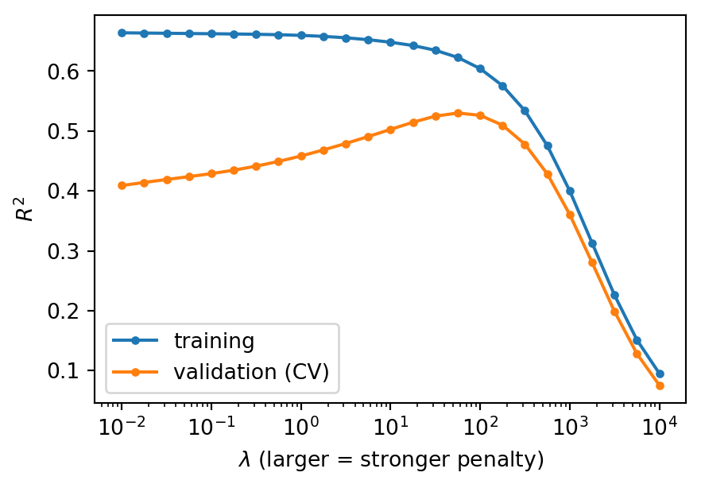
The mirror image of the C curve of 4b. Small \(\lambda\): training high, validation low (variance). Large \(\lambda\): both fall together (bias). The best \(\lambda\) sits where the validation curve peaks; the gap between the curves shrinks as \(\lambda\) grows. We now know what the curve is made of: \(\lambda\) trades variance for bias.
Regularisation for classification
The logistic regression of 3a is fitted with the same idea: log-loss (cross-entropy) plus a penalty. scikit-learn puts the hyperparameter on the data term:
\[ L(\mathbf{w}, b) = C\sum_{i=1}^{n}\ell\big(y_i, \hat p_i\big) + \frac{1-r}{2}\|\mathbf{w}\|_2^2 + r\,\|\mathbf{w}\|_1, \qquad \ell = \text{log-loss of sample } i \]
- dividing by \(C\) gives the form we used for regression: \(C\) is the inverse of the strength, \(\lambda \propto 1/C\). Small
Cmeans strong regularisation. l1_ratio\(= r\): 0 (the default) is L2, 1 is L1, values in between give Elastic Net. This replaces the deprecatedpenaltyargument (3a).- L1 needs a solver that handles it:
solver="liblinear"(fast for small data) or"saga". - the default
C = 1is always a Ridge-like penalty: scikit-learn’s logistic regression is regularised unless you ask otherwise (a large finiteC, as in 3a).
Everything we saw about C now has an explanation. The calibration example of 4a: C = 0.001 gave under-confident probabilities because the penalty kept the weights, and so the scores \(z\), small: probabilities squeezed towards 0.5. The validation curve of 4b: small C underfits (bias), large C overfits (variance).
Note
Three names for one knob. \(\lambda\), C and the budget \(\tau\) of the constrained form all set how large the weights may become. \(\lambda\) is the price of large weights; C \(\propto 1/\lambda\) is the price of training errors; \(\tau\) is the size the weights may reach. Large C means small \(\lambda\) and a large budget \(\tau\): C and \(\tau\) grow together. The link to \(\tau\) is monotone but not a fixed formula: it depends on the data. Do not confuse \(\tau\) with the decision threshold \(t\) of 4a, which acts on \(\hat p_i\) after training and does not change the model.
L2 and L1 on breast cancer
The breast cancer pipeline of 3a–4b (malignant = 1), with L2 and L1 penalties of decreasing strength:
from sklearn.datasets import load_breast_cancer
from sklearn.linear_model import LogisticRegression
from sklearn.model_selection import StratifiedKFold
cancer = load_breast_cancer()
X, y = cancer.data, 1 - cancer.target # 1 = malignant
X_train, X_test, y_train, y_test = train_test_split(
X, y, test_size=0.25, stratify=y, random_state=0)
cv = StratifiedKFold(5, shuffle=True, random_state=0) # how to split: 5 stratified folds
for C in [0.01, 0.1, 1, 10, 100]:
l2 = make_pipeline(StandardScaler(), LogisticRegression(C=C, max_iter=10_000))
l1 = make_pipeline(StandardScaler(), LogisticRegression(C=C, l1_ratio=1, solver="liblinear", random_state=0))
s2, s1 = (cross_val_score(m, X_train, y_train, cv=cv).mean() for m in (l2, l1))
l2.fit(X_train, y_train); l1.fit(X_train, y_train)
print(f"C = {C:6g} L2: CV acc {s2:.3f}, largest |w| {np.abs(l2[-1].coef_).max():5.2f}"
f" L1: CV acc {s1:.3f}, non-zero weights {np.sum(l1[-1].coef_ != 0):2d} / 30")C = 0.01 L2: CV acc 0.944, largest |w| 0.23 L1: CV acc 0.915, non-zero weights 3 / 30
C = 0.1 L2: CV acc 0.974, largest |w| 0.51 L1: CV acc 0.967, non-zero weights 7 / 30
C = 1 L2: CV acc 0.977, largest |w| 1.24 L1: CV acc 0.965, non-zero weights 14 / 30
C = 10 L2: CV acc 0.974, largest |w| 2.85 L1: CV acc 0.969, non-zero weights 23 / 30
C = 100 L2: CV acc 0.960, largest |w| 9.93 L1: CV acc 0.955, non-zero weights 28 / 30With L2, the weights grow steadily with C; accuracy is flat between C = 0.1 and 10 and drops at both ends. With L1, C also decides how many features the model uses: 3 at C = 0.01, 7 at C = 0.1, 14 at C = 1. A model with 7 features is almost as accurate as one with 30 and much easier to explain.
Choosing C by cross-validation
LogisticRegressionCV searches C (and l1_ratio) internally, like RidgeCV:
from sklearn.linear_model import LogisticRegressionCV
from sklearn.metrics import accuracy_score, log_loss
cv = StratifiedKFold(5, shuffle=True, random_state=0) # how to split: 5 stratified folds
lrcv = make_pipeline(StandardScaler(),
LogisticRegressionCV(Cs=np.logspace(-3, 3, 13), l1_ratios=(0.0,), cv=cv,
scoring="neg_log_loss", use_legacy_attributes=False))
lrcv.fit(X_train, y_train)
print(f"C chosen by CV (log-loss): {lrcv[-1].C_:g}")
print(f"test accuracy {accuracy_score(y_test, lrcv.predict(X_test)):.3f}, "
f"test log-loss {log_loss(y_test, lrcv.predict_proba(X_test)[:, 1]):.3f}")C chosen by CV (log-loss): 1
test accuracy 0.986, test log-loss 0.076Here the search confirms the default, C = 1: not always the case, and the only way to know is to search. Why the log-loss as scoring (the default of LogisticRegressionCV is accuracy)? Accuracy changes in steps of one sample and is flat over a wide range of C (previous slide), so many values tie. The log-loss is smooth, it is the loss the model is trained on, and it judges the probabilities, which C affects most. The general rule is that of 4a: score the search with the metric that matches the use of the model (probabilities: log-loss or Brier; ranking: AUROC; decisions: \(F_1\) or a cost). l1_ratios=(0.0,) and use_legacy_attributes=False silence two transition warnings of scikit-learn 1.8; a list such as (0, 0.5, 1) searches the penalty type too (with solver="saga", slower).
Embedded feature selection
With an L1 penalty, the model selects features while training: an embedded method. SelectFromModel turns it into a selection step of the pipeline, keeping the features with non-zero weight:
from sklearn.feature_selection import SelectFromModel
cv = StratifiedKFold(5, shuffle=True, random_state=0) # how to split: 5 stratified folds
emb = make_pipeline(StandardScaler(),
SelectFromModel(LogisticRegression(C=0.05, l1_ratio=1, solver="liblinear", random_state=0)),
LogisticRegression())
print(f"embedded (L1): CV accuracy = {cross_val_score(emb, X_train, y_train, cv=cv).mean():.3f}")
emb.fit(X_train, y_train)
sel = cancer.feature_names[emb[1].get_support()]
print(f"{len(sel)} features:", ", ".join(sel))embedded (L1): CV accuracy = 0.977
6 features: mean concave points, worst radius, worst texture, worst smoothness, worst concave points, worst symmetryThe selected features are the support of \(\mathbf{w}\): the features with \(w_j \neq 0\) (a weight below \(10^{-5}\) counts as zero), returned as a boolean mask by get_support(), like the selectors of 3b and 4b. Six features, selected in a single fit, with a CV accuracy above both selections of 4b on five features (wrapper 0.962, filter 0.944). Like the wrapper, the L1 model looks at the features together: it keeps size (worst radius), texture, smoothness, symmetry and concave points, not five versions of the size. The C of the selector is a hyperparameter like \(k\) of SelectKBest, tuned with selectfrommodel__estimator__C.
Feature selection: the three families
| Family | Idea | Cost | Sees feature interactions | Where |
|---|---|---|---|---|
| filter | score each feature on its own (correlation, F-test, mutual information) | one pass | no | 3b |
| wrapper | search subsets, keep the best CV score of the model | many model fits | yes | 4b |
| embedded | the model selects while training (L1 weights; tree importances, 6a) | one model fit | yes, for that model | 5a |
All three are inside the pipeline, refitted in every fold, and their size hyperparameter (\(k\), the number of features, C) is chosen by cross-validation. In 5b we meet the alternative to selection: extraction, which builds new features (principal components) from all the original ones.
Warning
When features are strongly correlated, Lasso keeps one of a group and drops the others almost at random: a dropped feature is not necessarily irrelevant. Check the stability of the selection (bootstrap or CV folds) before interpreting it, or use Elastic Net.
Other forms of regularisation
Any constraint that limits the effective flexibility of a model regularises it. A common one: early stopping. Gradient descent (2b) on the degree-2 diabetes features, one epoch at a time, watching a validation set:
from sklearn.linear_model import SGDRegressor
Z_a, Z_v, y_a, y_v = train_test_split(Z, yd_train, test_size=0.25, random_state=0)
sgd = SGDRegressor(learning_rate="constant", eta0=0.002, alpha=0.0, random_state=0)
tr_mse, va_mse = [], []
for epoch in range(300):
sgd.partial_fit(Z_a, y_a) # one pass over the data
tr_mse.append(mean_squared_error(y_a, sgd.predict(Z_a)))
va_mse.append(mean_squared_error(y_v, sgd.predict(Z_v)))
fig, ax = plt.subplots(figsize=(5, 3.3))
ax.plot(range(1, 301), tr_mse, label="training")
ax.plot(range(1, 301), va_mse, label="validation")
best = int(np.argmin(va_mse)) + 1
ax.axvline(best, color="k", linestyle=":", label=f"best epoch: {best}")
ax.set_xlabel("epoch")
ax.set_ylabel("MSE")
ax.set_ylim(1500, 6000)
_ = ax.legend()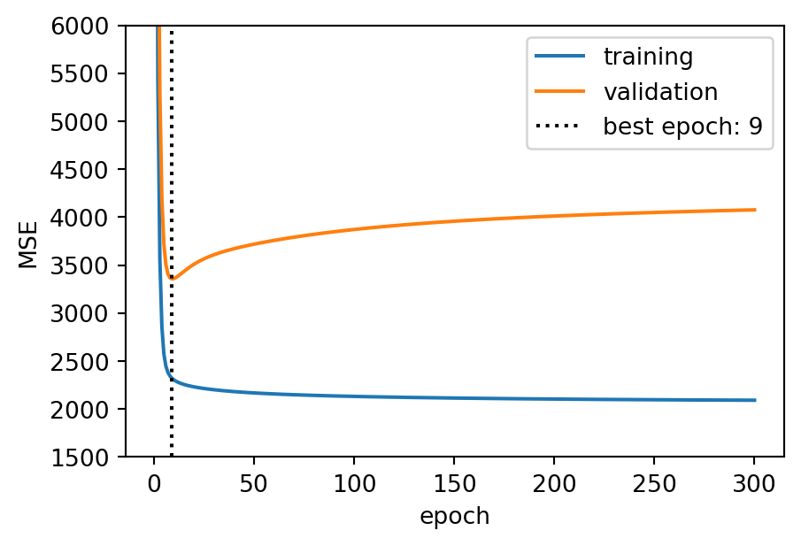
Starting from \(\mathbf{w} = 0\), the weights grow with every step. The validation error falls, reaches a minimum and then rises again while the training error keeps decreasing: stopping at the minimum keeps the weights small, an effect similar to L2. The number of epochs plays the role of \(1/\lambda\). In scikit-learn: SGDRegressor(early_stopping=True, validation_fraction=0.2, n_iter_no_change=10); for neural networks (CW3) early stopping is standard practice.
Regularisation everywhere
Every method of the course has a “complexity knob”, and choosing it by cross-validation is regularisation:
| Method | Hyperparameter that limits flexibility | Lecture |
|---|---|---|
| linear and logistic regression | \(\lambda\) (alpha), C, l1_ratio |
5a |
| polynomial features, selection | degree, number of features | 3b, 4b |
| decision trees | maximum depth, minimum samples per leaf, pruning ccp_alpha |
6a |
| ensembles | number of models, learning rate, early stopping | 6b |
| k-nearest neighbours, SVM | \(k\); C and the kernel width \(\gamma\) |
7a |
| neural networks | weight decay (L2), early stopping, dropout, data augmentation | weeks 8–10, CW3 |
Two of the last row in one sentence each. Data augmentation adds modified copies of the training samples (rotated images, noisy signals): training with input noise of variance \(s^2\) is approximately equivalent to an L2 penalty with \(\lambda \propto s^2\). Dropout randomly switches off part of a network during training, so that no single weight can become essential; it behaves like averaging many smaller networks, the idea of the averaging slides.
What regularisation cannot do
Regularisation reduces variance, at the cost of some bias. If the model family itself is wrong, there is no variance to remove. A classic example, the XOR pattern: class 1 when \(x_1\) and \(x_2\) have the same sign.
rng = np.random.default_rng(0)
Xx = rng.uniform(-1, 1, (400, 2))
yx = (Xx[:, 0] * Xx[:, 1] > 0).astype(int)
cv = StratifiedKFold(5, shuffle=True, random_state=0) # how to split: 5 stratified folds
for C in [0.001, 0.1, 1, 100]:
acc = cross_val_score(make_pipeline(StandardScaler(), LogisticRegression(C=C)),
Xx, yx, cv=cv).mean()
print(f"C = {C:6g}: CV accuracy = {acc:.3f}")
fig, ax = plt.subplots(figsize=(3.4, 3.2))
_ = ax.scatter(Xx[:, 0], Xx[:, 1], c=yx, cmap="bwr", s=8)C = 0.001: CV accuracy = 0.548
C = 0.1: CV accuracy = 0.510
C = 1: CV accuracy = 0.505
C = 100: CV accuracy = 0.505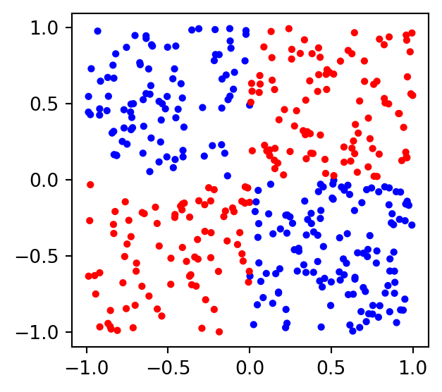
About 0.5 for every C: no straight line separates the four quadrants, however we limit or free the weights. This is high bias: the remedy is a different model family \(H\), not a different penalty. Engineered features would work here (\(x_1 x_2\), a degree-2 interaction), but they require knowing the answer. Next week’s decision trees (6a) cut the feature space into boxes and handle this kind of pattern without being told.
Summary: regularised linear models as (H, L, A)
| Element | Ridge | Lasso | Elastic Net | Regularised logistic regression |
|---|---|---|---|---|
| Model \(H\) | linear, \(\hat y = b + \mathbf{w}^T\mathbf{x}\) | linear | linear | linear score, sigmoid or softmax (3a) |
| Strategy \(L\) | squared error \(+ \lambda\|\mathbf{w}\|_2^2\) | squared error \(+ \lambda\|\mathbf{w}\|_1\) | squared error \(+\) both | log-loss \(+\) L2, L1 or both (C, l1_ratio) |
| Algorithm \(A\) | closed form, or gradient descent | coordinate descent | coordinate descent | iterative solvers (lbfgs; liblinear, saga for L1) |
| Hyperparameters | \(\lambda\) | \(\lambda\) | \(\lambda\), \(r\) | C, l1_ratio |
The model family is unchanged: regularisation changes only the strategy. It restricts, softly, which members of \(H\) the algorithm may choose, and makes an ill-posed problem well-posed: a unique, stable solution. The same move will come back with every model of the course.
What to look for
When you regularise a model, check:
- that the features are scaled inside the pipeline before a penalised model
- that \(\lambda\) (or
C) is chosen by cross-validation, over a logarithmic grid, and that the best value is not at the edge of the grid - the validation curve of \(\lambda\): where are the high-bias and high-variance regions?
- the coefficient path: which features survive, and are correlated features treated consistently?
- with L1: how many features are kept, and is the selection stable across folds?
- that the regularised model is compared with the unregularised one and a baseline, with the spread of the CV scores
- if every \(\lambda\) gives the same poor score: a bias problem, change the model, not the penalty
Suggested readings and activities
Suggested readings:
- Bias, variance and regularised linear models in Machine Learning with Python (chapters on linear models and on feature selection) and in The Elements of Statistical Learning, sections 2.9 and 3.4.
- The scikit-learn user guide on linear models (Ridge, Lasso, Elastic Net, logistic regression) and on feature selection with
SelectFromModel.
Suggested activities:
- Repeat the bias–variance simulation with 100 training samples instead of 25: where does the minimum of the total error move?
- Replace
RidgebyLassoin the degree-15 polynomial example: which powers of \(x\) survive? - Run
ElasticNetCV(l1_ratio=[0.1, 0.5, 0.9, 1])on the degree-2 diabetes features and compare with Ridge and Lasso. - Bootstrap the embedded selection on breast cancer 100 times: how often is each feature selected?
Coursework: CW1 this week, CW2 next
CW1 is due this week: questions in Lab02. Deadlines, submission instructions and the marking rubric are on Moodle.
For CW2 (2–3 scikit-learn tools on your CW1 dataset, critical comparison, best pipeline), today’s concepts the coursework expects you to use and discuss:
- regularised models (
Ridge,Lasso,ElasticNet,LogisticRegressionwith tunedCandl1_ratio) as candidates or as the baseline to beat - \(\lambda\) or
Cchosen by cross-validation inside a pipeline, with validation curves to support the choice - bias and variance as the language to explain why one model generalises better than another
- embedded selection (L1) compared with the filter and wrapper methods of 3b and 4b
Tip
CW3 builds on today too: weight decay (L2) and early stopping are the regularisers of the neural networks of weeks 8–10.

ENG4200 AI4